<div class="modal-dialog modal-lg modal-dialog-centered" role="document">
  <div class="modal-content">
    <div class="modal-header text-center pb-0">
      <h1 class="p-2 m-auto">OSE - Online Secure Exams</h1>
      <button type="button" class="btn-close" data-bs-dismiss="modal" aria-label="Close"></button>
    </div>
    <div class="modal-body pt-2">
      <p class="text-uppercase text-center date mb-2"><i class="fas fa-calendar-alt"></i> Septembre-Novembre 2020</p>

      <div class="accordion accordion-flush" id="accordion_ose">
        <div class="accordion-item">
          <h2 class="accordion-header" id="acc_ose_1">
            <button class="accordion-button collapsed" type="button" data-bs-toggle="collapse" data-bs-target="#collapse_ose_1" aria-expanded="false" aria-controls="collapse_ose_1">
              Description
            </button>
          </h2>
          <div id="collapse_ose_1" class="accordion-collapse collapse" aria-labelledby="acc_ose_1" data-bs-parent="#accordion_ose">
            <div class="accordion-body">
              <div class="text-center">
                <i class="fab fa-node icon_outils" title="NodeJS"></i> 
                <i class="fab fa-html5 icon_outils" title="HTML"></i>
                <i class="fab fa-css3-alt icon_outils" title="CSS"></i>
                <i class="fab fa-bootstrap icon_outils" title="Bootstrap"></i>
                <i class="fab fa-js-square icon_outils" title="Javascript"></i>
              </div>
              <p class="text-center" style="color: #846828;">
                <span class="text-uppercase" style="letter-spacing: 1px;">Type de réalisation </span>: Projet personnel
              </p>
              <p>
                C'est une plate-forme qui permet de réaliser des <span class="span_bold">examens en ligne</span>. Cette application a l'avantage d'être sécuritaire, et 
                d'<span class="span_bold">éviter une certaine forme de triche</span> qui devient évidemment plus large à cause de la distance. Un étudiant à la maison n'est pas surveillé dans les mêmes conditions que lors 
                d'un vrai examen organisé en présentiel.<br>
                Pour remédier à ceci, nous avons pensé à plusieurs idées que nous avons su mettre en place (vous les retrouverez dans la partie Fonctionnalités).<br>
                De plus, cette application est <span class="span_bold">simple d'utilisation</span>. Un enseignant a tout simplement besoin de créer un fichier JSON qui regroupe certains renseignements
                ainsi que l'intégralité des questions.<br>
                Nous avons le choix entre trois formes de questions : <input class="form-check-input mt-1" type="checkbox" disabled> checkboxes, 
                <input class="form-check-input mt-1" type="radio" disabled> boutons radio, ou zone de texte.<br/>
                Il est également possible d'insérer du code (qui sera formatté automatiquement) dans l'énoncé de la question.
              </p>
              <p class="mb-0">Nous avons réalisé ce projet à deux, à l'aide de NodeJS, HTML, Javascript, JQuery, HTML, et CSS.</p>
              <p><a href="https://developer.mozilla.org/fr/docs/Web/API/WebSockets_API">L'API Webocket</a> 
                a également été utilisée pour réaliser le dialogue avec le serveur.
              </p>
            </div>
          </div>
        </div>
        <div class="accordion-item">
          <h2 class="accordion-header" id="acc_ose_2">
            <button class="accordion-button collapsed" type="button" data-bs-toggle="collapse" data-bs-target="#collapse_ose_2" aria-expanded="false" aria-controls="collapse_ose_2">
              Fonctionnalités
            </button>
          </h2>
          <div id="collapse_ose_2" class="accordion-collapse collapse" aria-labelledby="acc_ose_2" data-bs-parent="#accordion_ose">
            <div class="accordion-body">
              <u>Anti-triche :</u>
              <ul>
                <li>À la connexion, prise de photo obligatoire pour une confirmation de l'identité</li>
                <li>À chaque début de question, démarrage d'un enregistrement vidéo et audio de l'étudiant</li>
                <li>Mode plein écran activé automatiquement, puis détection lorsque celui-ci est désactivé</li>
                <li>Prévention lorsqu'une autre page que celle de l'examen est consultée ou lors de l'ouverture de la console du navigateur</li>
                <li>À la fin de l'examen, compte rendu du nombre de fois où le mode examen a été désactivé</li>
                <li>Désactivation des clics droits, et des raccourcis de copier-coller (<kbd>CRTL</kbd> + <kbd>C</kbd>, <kbd>CRTL</kbd> + <kbd>V</kbd>)</li>
              </ul>
              <u>Autres fonctionnalités :</u>
              <ul>
                <li>Chronomètre pour la durée totale de l'examen, ainsi qu'un chronomètre pour l'activation de questions à temps limité</li>
                <li>Sécurité/confirmation avant de l'envoi de chaque réponse</li>
                <li>Affichage de la vidéo de la caméra en miniature pour rappeler que l'examen est filmé</li>
                <li>Création d'un fichier JSON à chaque fin d'examen rassemblant toutes les réponses sauvegardées</li>
              </ul>
            </div>
          </div>
        </div>
        <div class="accordion-item">
          <h2 class="accordion-header" id="accordion_ose_3">
            <button class="accordion-button collapsed" type="button" data-bs-toggle="collapse" data-bs-target="#collapse_ose_3" aria-expanded="false" aria-controls="collapse_ose_3">
              Ce que j'en ai pensé
            </button>
          </h2>
          <div id="collapse_ose_3" class="accordion-collapse collapse" aria-labelledby="accordion_ose_3" data-bs-parent="#accordion_ose">
            <div class="accordion-body">
              <p>
                J'ai aidé à la réalisation de ce projet à deux pendant plusieurs mois. C'est un travail d'équipe qui a été long mais efficace et 
                qui est encore aujourd'hui régulièrement mis à jour. Nous avons réalisé chacune des idées que nous avons imaginé. 
                J'ai appris énormément de choses, notamment qu'il est possible de réaliser un tas de choses imaginables !
              </p>
              <p> Je suis super contente et fière d'avoir pu réaliser une application aussi efficace et si particulière dans son concept. ✌</p>
            </div>
          </div>
        </div>
      </div>
      
      <br>
      <div id="carousel_ose" class="carousel slide carousel-dark" data-bs-ride="carousel">
        <div class="carousel-indicators">
          <button type="button" data-bs-target="#carousel_ose" data-bs-slide-to="0" class="active" aria-current="true" aria-label="Slide 1"></button>
          <button type="button" data-bs-target="#carousel_ose" data-bs-slide-to="1" aria-label="Slide 2"></button>
          <button type="button" data-bs-target="#carousel_ose" data-bs-slide-to="2" aria-label="Slide 3"></button>
          <button type="button" data-bs-target="#carousel_ose" data-bs-slide-to="3" aria-label="Slide 4"></button>
          <button type="button" data-bs-target="#carousel_ose" data-bs-slide-to="4" aria-label="Slide 5"></button>
          <button type="button" data-bs-target="#carousel_ose" data-bs-slide-to="5" aria-label="Slide 6"></button>
          <button type="button" data-bs-target="#carousel_ose" data-bs-slide-to="6" aria-label="Slide 7"></button>
          <button type="button" data-bs-target="#carousel_ose" data-bs-slide-to="7" aria-label="Slide 8"></button>
          <button type="button" data-bs-target="#carousel_ose" data-bs-slide-to="8" aria-label="Slide 9"></button>
          <button type="button" data-bs-target="#carousel_ose" data-bs-slide-to="9" aria-label="Slide 10"></button>
          <button type="button" data-bs-target="#carousel_ose" data-bs-slide-to="10" aria-label="Slide 11"></button>
          <button type="button" data-bs-target="#carousel_ose" data-bs-slide-to="11" aria-label="Slide 12"></button>
        </div>
        <div class="carousel-inner">
          <div class="carousel-item active">
            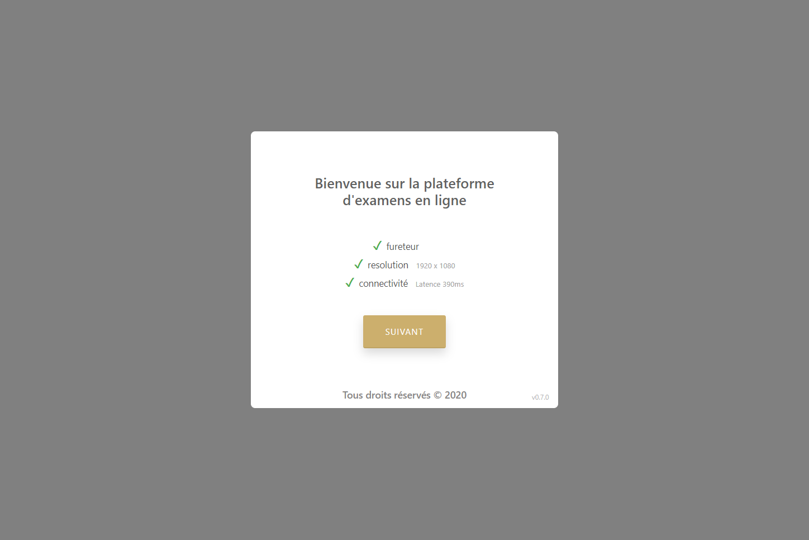
          </div>
          <div class="carousel-item">
            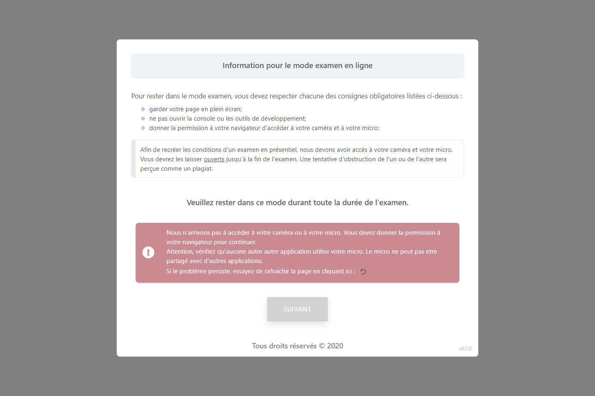
          </div>
          <div class="carousel-item">
            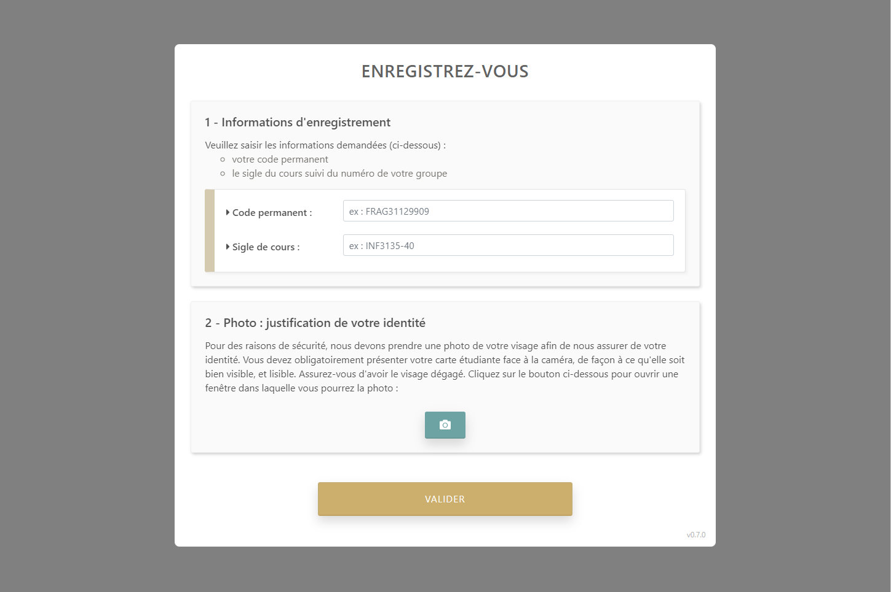
          </div>
          <div class="carousel-item">
            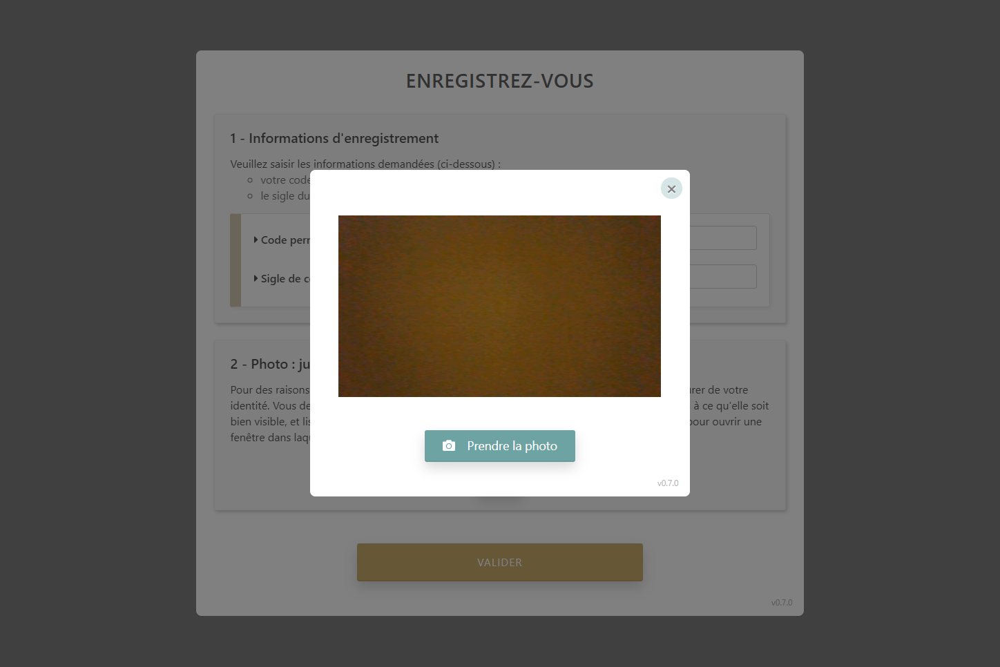
          </div>
          <div class="carousel-item">
            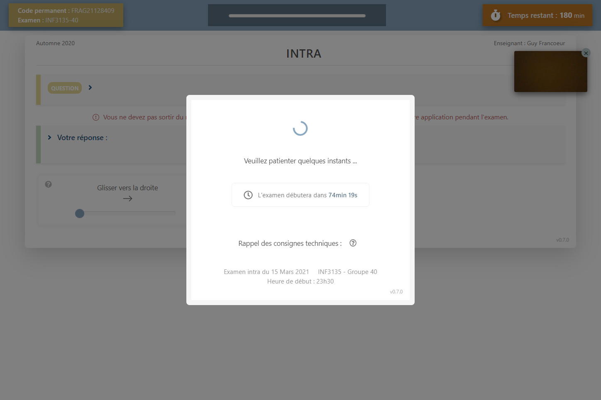
          </div>
          <div class="carousel-item">
            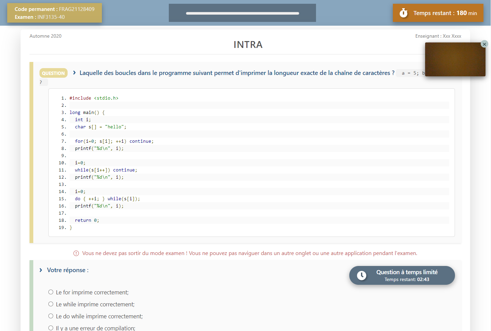
          </div>
          <div class="carousel-item">
            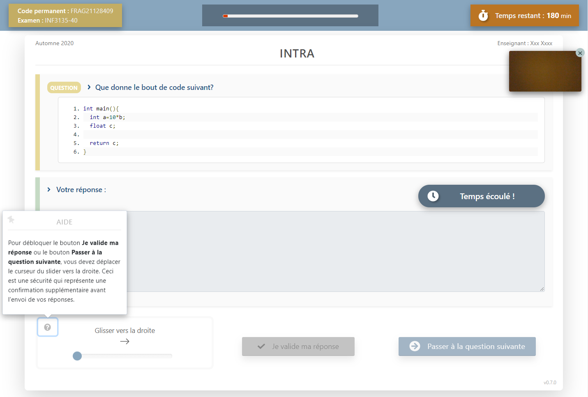
          </div>
          <div class="carousel-item">
            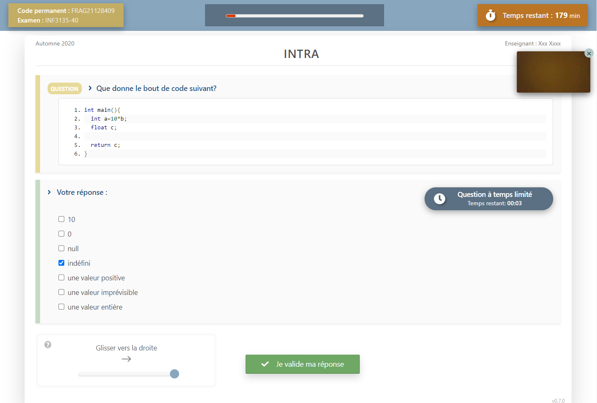
          </div>
          <div class="carousel-item">
            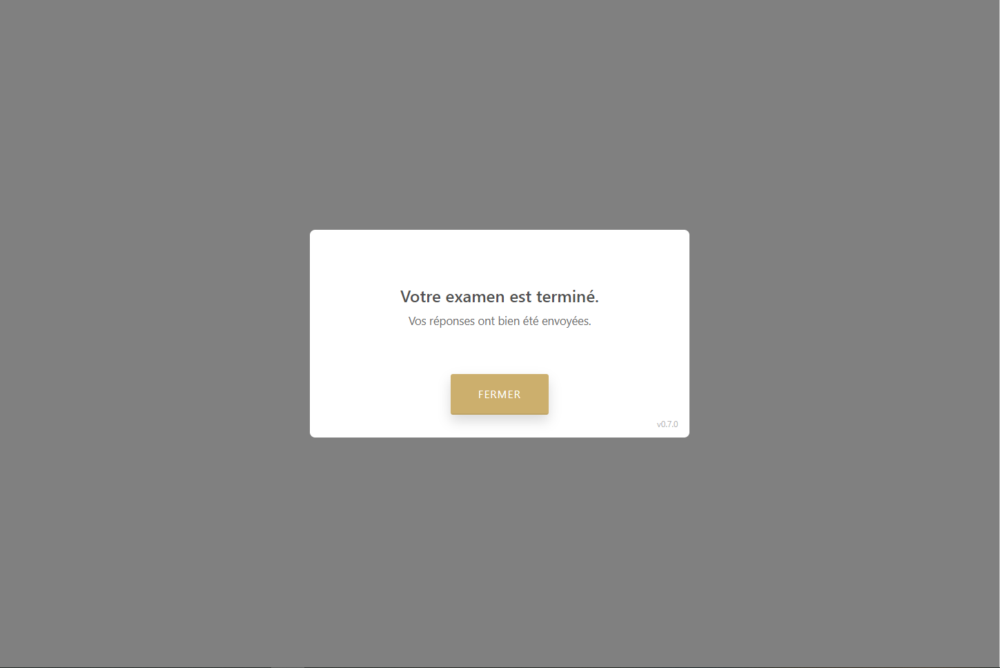
          </div>
          <div class="carousel-item">
            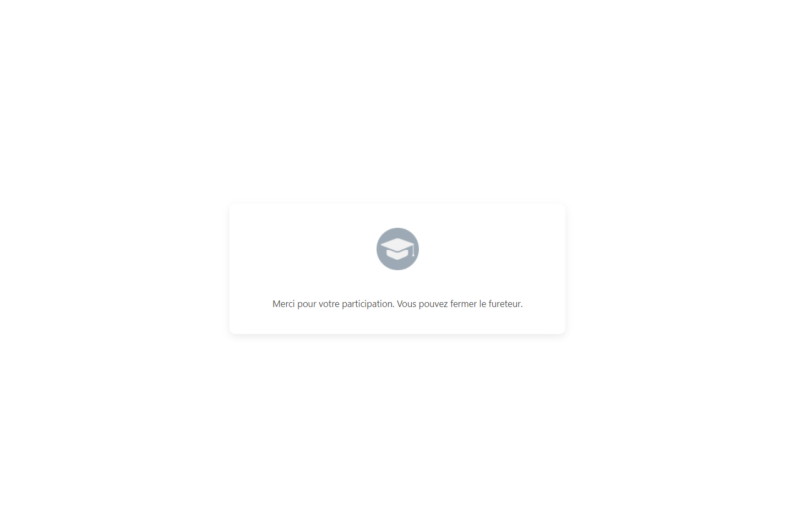
          </div>
          <div class="carousel-item">
            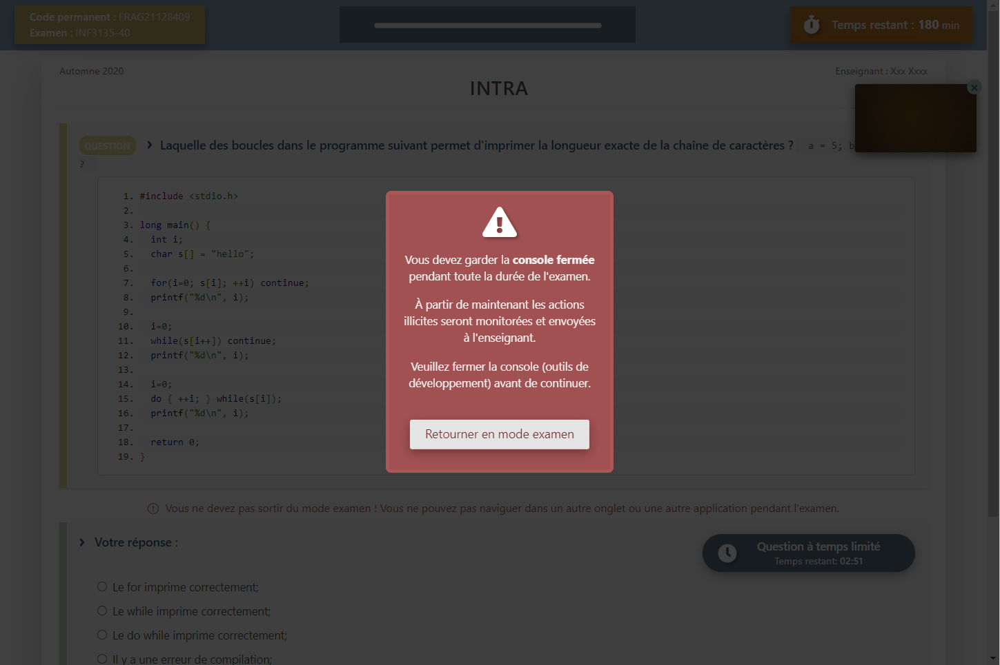
          </div>
        </div>

        
        <button class="carousel-control-prev" type="button" data-bs-target="#carousel_ose"  data-bs-slide="prev">
          <span class="carousel-control-prev-icon" aria-hidden="true"></span>
          <span class="visually-hidden">Previous</span>
        </button>
        <button class="carousel-control-next" type="button" data-bs-target="#carousel_ose"  data-bs-slide="next">
          <span class="carousel-control-next-icon" aria-hidden="true"></span>
          <span class="visually-hidden">Next</span>
        </button>
      </div>
    </div>
  </div>
</div>